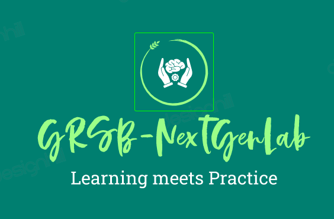

GRSB-NextGenLab
Where Learning meets Practice
Technologies we Practice
- HPE Oneview - Software Defined Infrastructure
- Dockers and Kubernetes
- HPE Syenrgy Solutions - Composable Infrastructure
- HPE Simplivity - HyperConverged Infrastructure
- Python
- Deep Learning Theory and Practice
- HPE
Ezmeral - Container Platform
- VMware Technologies - VCP-6.5,6.7,7.0
- Windows Server Technologies - Windows Server 2012,2016,2019,2022
- Linux Fundamentals - RHEL,CentOS,Ubuntu
- HPE
Ezmeral Datafabric - Enterprise Hadoop Database
- Servers
- Blade Infrastructure
- IOT Products
- Programming Basics
- REST API
NextGenLab
-
Dockers
-
Kubernetes
-
Linux
-
Windows
-
Windows Server 2012
-
Windows Server 2016
-
Windows Server 2019
-
Windows Server 2022
Hadoop Technologies
MAPR Storage/HPE Ezmeral Datafabric
Cloudera Data Platform
HortonWorks Data Platform
Programming Technologies
Python
Java
C
C++
HTML
REST API
Shell Scripting